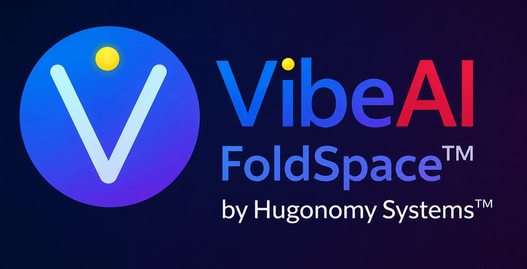
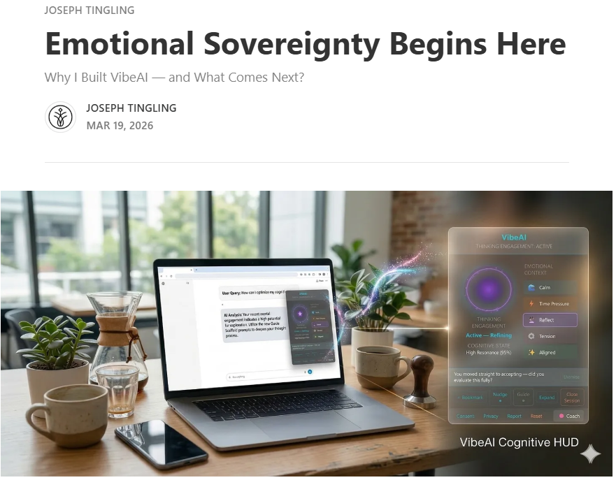
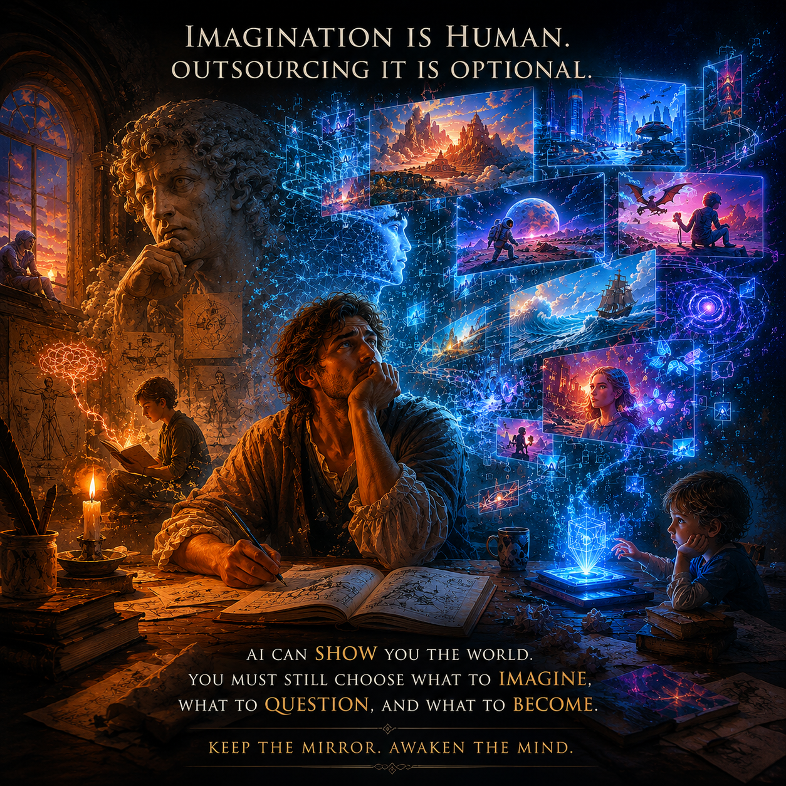

Emotional Sovereignty Begins Here
Why I Built VibeAI — and What Comes Next
Read on Substack →
News & Media
From a studio in Urbana, Illinois — to the Chrome and Edge stores, and beyond.
Timeline
School work. Resume drafting. Code analysis.
The universal reflex to a thorough AI answer is the same three letters: “ok thanks.”
We built the moment-detection architecture that recognizes when the conversation flattens — when the back-and-forth stops being back-and-forth. The Hugo Orb turns yellow the instant it surfaces.
Your AI never asks if you actually understood. We do.
Passive Mode recognition improved. Coming in v2.22, Summer 2026.
Visit hugonomy.com · join the conversation at r/AICognitiveWatch
Stay curious. Keep thinking. Use VibeAI FoldSpace and Vibe with your AI.
Two bugs fixed in this release: the Thinking Mirror anti-spam guard that blocked auto-open on extension reload, and the onboarding nudge cooldown that silently blocked the core passive detection feature on fresh installs. Both caught by controlled testing and patched before approval on both browser stores.
"I can definitely see this extension being useful when using AI agents for qualititative tasks like conversation or understanding the broad details of a research paper. I appreciate how it asks me to reflect on my experience in this context. However for long coding or technical projects in which I am mostly debugging errors, the prompts were less useful and occasionally distracting. It would be cool if the VibeAI Coach could detect the difference in use." — Ender Wiggins · Chrome Web Store · 2/2 found this helpful
The gap Ender identified — context-awareness between qualitative exploration and technical debugging — shipped in v2.20.0 as a code-pattern guard and DEBUG context detector. Our first reviewer asked for it. The next version shipped it.
Session Load Arc, Bookmark Panel MVP, coach panel Edge fix, guide panel collapse, attention-aware suppression for focused work, and the DEBUG context detector responding directly to the first user review.
VibeAI FoldSpace is now available on both major browser platforms. Chrome Store ID: lkmfjgaahnmlncgaeocfgiohjiodiohi · Edge Store ID: kbdhbghaidmildhhbodkppnnhklmddfh
When a user types a short acknowledgment ("thanks", "ok", "hmm"), the system detects Passive Mode and auto-opens the Thinking Mirror guide panel — surfacing reflection prompts before acceptance. Confirmed working on ChatGPT, Claude.ai, and Gemini.
After months of development and internal validation, VibeAI FoldSpace received its first official Chrome Web Store approval. Email confirmed: "Item successfully published."
Hugonomy's first appearance in front of fellow startup entrepreneurs at the UIUC Research Park. The vision that had lived in sketches, code, and late-night sessions was spoken aloud for the first time. Strategic financial insight for early-stage startups.
Now live on Chrome & Edge — April 2026 · Install Free →
For immediate release
April 19, 2026 · Urbana-Champaign, IL
VibeAI FoldSpace v2.20.1 is now approved on both Microsoft Edge Add-ons and the Chrome Web Store. Hugonomy Systems is building a local-first cognitive awareness layer for AI conversations so people can stay engaged, reflective, and in control while using ChatGPT, Claude, and Gemini.
Version 2.20.1 includes bug fixes and stability hardening, including a fix for Thinking Mirror auto-open behavior on extension reload and a fix for the onboarding cooldown that could block passive detection on fresh installs.
VibeAI FoldSpace remains built around a strict local-first design: no cloud processing, no profiling, and no behavioral tracking. The product runs directly in the browser so people can use AI tools without giving up awareness of their own thinking.
Media contact: joseph@hugonomy.com
From the founder

Why I Built VibeAI — and What Comes Next
Read on Substack →After dozens of builds, audits, and late-night debugging sessions, Hugonomy Systems is almost ready for its next step.
Read on Substack →Founder commentary
May 2026 · Joseph D. Tingling MD/PhD · Hugonomy Systems
Anthropic's Claude Mythos recently cleared a significant threshold on METR (Model Evaluation and Threat Research) evaluations: a 50% task-completion horizon of at least 16 hours of sustained autonomous operation — at the upper limit of what METR's current benchmark suite can reliably measure. [1]
To understand why that number matters, consider what it replaces. Previous frontier systems operated in the minutes-to-hours range. A 16-hour autonomous horizon means an AI agent can now plan, execute, and iterate on complex multi-step work across a full working day — without a human in the loop. METR's own data shows the frontier time-horizon has been doubling roughly every 7 months since 2019. [2]
This is not a superintelligence story. It is an agency story. And it raises a question no benchmark currently measures: When the AI hands the result back to you after 16 hours of autonomous work — do you understand what it decided, and why?
This is exactly the gap Hugonomy was built to address. Not to slow AI down. Not to make AI less capable. But to keep the human cognitively present at the moments that matter: the handoff, the review, the decision to accept or challenge.
VibeAI FoldSpace is our first test of this idea. A free browser extension for ChatGPT, Claude, and Gemini that catches you the moment you stop thinking inside a single AI session — passive acceptance, cognitive drift, the "ok thanks" that ends a conversation you should have pushed further. It is a proof of concept: can a lightweight awareness layer change how a person engages with AI in real time? Early signals say yes.
AllMinds Lens is what comes next. Where FoldSpace watches a single session, Lens watches across many — building a picture of your cognitive patterns over time, surfacing blind spots, and nudging you toward deeper engagement before the habit of passive acceptance becomes invisible. If FoldSpace is the smoke detector, Lens is the carbon monoxide monitor: the one that catches what you can't see in the moment.
As AI task horizons grow from minutes to hours to days, the cognitive re-entry point — the moment a human meaningfully re-engages with what the AI produced — becomes the most important moment in the workflow. The longer the autonomous horizon, the more consequential that moment becomes. The AI Awareness Stack is not a reaction to AI capability. It's a prerequisite for it.
Citations:
[1] METR. Task-Completion Time Horizons of Frontier AI Models.
metr.org/time-horizons
[2] METR. Time Horizon 1.1. January 29, 2026.
metr.org/blog/2026-1-29-time-horizon-1-1
[3] The Decoder. METR says it can barely measure Claude Mythos.
the-decoder.com
Discuss this on Reddit: r/AICognitiveWatch · Contact: joseph@hugonomy.com
Follow along
Substack
Deep-dives on cognitive engagement, AI literacy, reflective use, and the Hugonomy thesis. Published by Jo.
YouTube
Product demos, walkthroughs, and behind-the-build content. 90-second demo available now.
Product updates, research citations, launch milestones, and founder commentary.
Community discussion on AI cognitive dynamics, human-AI interaction research, and the field Hugonomy is building in.
Discord
Live user feedback, bug reports, session sharing, and the weekly journal club on AI cognition research.
For Journalists & Researchers
We're available for press inquiries, expert commentary on AI cognition research, and interview requests.
Commentary note · May 20 2026
Gemini Omni and the next surface of cognitive offloading.

Google released Gemini Omni yesterday at I/O 2026 — a multimodal model that generates and edits video from text, image, audio, or video input. Rolling out to AI Plus subscribers, and crucially, free through YouTube Shorts and YouTube Create starting this week. Hassabis framed it explicitly: "With world models, AI is moving from predicting text to simulating reality."
A few things worth sitting with, because they touch this subreddit's whole topic in a way nobody covering the launch is naming:
Nearly all the cognitive-offloading research we follow here — Gerlich, Kabashkin's Cognitive Atrophy Paradox, the broader literature on AI's effect on thinking — has studied text-based AI interaction. That's what existed when those papers were written. Multimodal generative AI at consumer scale is functionally new ground. We don't yet know what cognitive offloading looks like when the offloadable surface expands from "writing" to "visualizing." The instinct of mentally picturing something before generating it — a sketch, a scene, a layout — may be the next thing the cognitive load quietly migrates off of, and we won't have research on it for years.
The Hassabis "simulating reality" framing is a real philosophical claim about what the model is doing, not just marketing. When the output isn't predicted text but generated reality-fragments, the user's relationship to verification changes. With text you can still read and disagree. With a 10-second video that plausibly shows a thing, the disagreement surface is different — harder to specify what's wrong, easier to accept the rendered version as how it would actually look.
The free YouTube Shorts rollout matters more than the AI Plus subscription tier. It puts world-model generation in front of hundreds of millions of users who weren't generative-AI users yesterday. The cognitive-engagement question doesn't get to wait for the research to catch up to that distribution.
Not a moral panic post — the model genuinely looks impressive, and most of what people will do with it will be fine. But this sub exists to track the second-order question (what does AI use do to thinking), and the launch suggests the answers we have so far are scoped to a narrower form of AI than the one users will be touching tomorrow.
Open question for the sub: what would the equivalent of the Kabashkin / Gerlich studies look like for multimodal generative use? What's the testable cognitive claim, and who's positioned to run it?
r/AICognitiveWatch — join the conversation · VibeAI FoldSpace — hugonomy.com